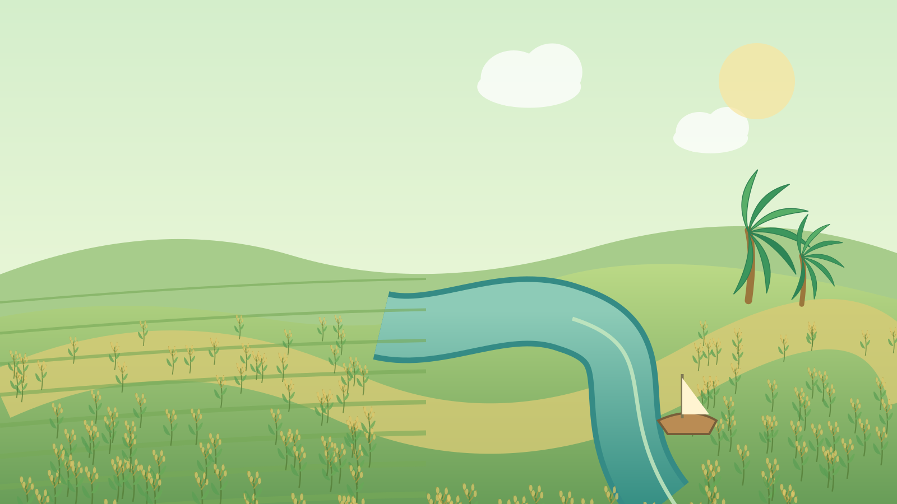

RÚT RA ĐIỀU GÌ?
VÙNG CỒN XANHGROUP 02 · MLN122
BẢN ĐỒ LẬP LUẬN01 Bối cảnh→02 Chủ thể→03 Mâu thuẫn→04 Điều tiết→05 Giải pháp→06 Kết luận
01ĐẶT VẤN ĐỀBỐI CẢNH & CƠ HỘI NÔNG NGHIỆP CÔNG NGHỆ CAO
◆ INFOGRAPHIC HỌC THUẬT TƯƠNG TÁC
Một hạt lúa,
Một hạt lúa,
nhiều lợi ích.
Vai trò của Nhà nước trong điều tiết quan hệ lợi ích giữa nông dân, hợp tác xã và doanh nghiệp trong nông nghiệp công nghệ cao tại Đồng bằng sông Cửu Long.
?
CÂU HỎI XUYÊN SUỐTKhi công nghệ tạo thêm giá trị, ai được hưởng lợi và mâu thuẫn được giải quyết thế nào?

ĐBSCLVÙNG SẢN XUẤT
HẠT LÚA → CHUỖI LIÊN KẾTGIÁ TRỊ ĐƯỢC TẠO RA
Nhưng ai góp nguồn lực, ai chịu chi phí?
02QUAN HỆ LỢI ÍCHBA CHỦ THỂ TRONG MỘT CHUỖI GIÁ TRỊ
Ai tham gia vào chuỗi liên kết?
Cùng tạo ra giá trị từ hạt lúa, nhưng mỗi chủ thể mang nguồn lực và mục tiêu khác nhau.
ĐẦU VÀO – SẢN XUẤT→
CHẾ BIẾN – THỊ TRƯỜNG↗
↶GIÁ TRỊ VÀ THANH TOÁN↶Hai chiều: sản phẩm, dịch vụ, thông tin, trách nhiệm và lợi ích.
CÙNG TẠO GIÁ TRỊ ≠ CÙNG LỢI ÍCHCÓ LIÊN KẾT, CÓ LỢI ÍCH
Mục tiêu riêng khiến những điểm va chạm xuất hiện.
03ĐIỂM NÓNG LỢI ÍCHSỰ THỐNG NHẤT VÀ MÂU THUẪN CÙNG TỒN TẠI
Cùng tạo giá trị, không cùng lợi ích
Khi phân chia chi phí, giá bán hoặc trách nhiệm chưa rõ ràng, các liên kết dễ bị gián đoạn.
ASỰ THỐNG NHẤTCÙNG CÓ LỢI
NGƯỜI TRỒNG━›HTX━›ĐẦU RA
- Ổn định sản xuất và đầu ra
- Tiết kiệm chi phí khi phối hợp
- Nâng chất lượng và giá trị chuỗi
≠HAI MẶT
CỦA LỢI ÍCH
CỦA LỢI ÍCH
BMÂU THUẪNCẦN ĐIỀU TIẾT
GIÁ MUA╳PHÍ DỊCH VỤ╳CHẤT LƯỢNG
- Giá bán và thời hạn thanh toán
- Phí HTX và nghĩa vụ thành viên
- Tiêu chuẩn, tiến độ và môi trường
04 NHÓM MÂU THUẪN THƯỜNG GẶPChọn một thẻ để xem tác động cụ thể ↗
THỬ MÔ PHỎNG LIÊN KẾTBa bên còn hợp tác: thông tin, hàng hóa và thanh toán được phối hợp theo thỏa thuận.
PHÁT HIỆN CẦN HÀNH ĐỘNGGiá / phí / chất lượng / môi trường
03 / 06Ví dụ minh họa theo slide nhóm 19–23; không phải dự báo tác động định lượng.CƠ CHẾ ĐIỀU TIẾT ↓
TỪ ĐIỂM NÓNG → ĐIỀU TIẾTMÂU THUẪN CẦN CƠ CHẾ
Để bảo vệ quyền và tạo điều kiện đối thoại.
04VAI TRÒ NHÀ NƯỚCBỐN CƠ CHẾ TÁC ĐỘNG ĐẾN QUAN HỆ LỢI ÍCH
Nhà nước điều tiết bằng cách nào?
Tạo điều kiện và giải quyết bất đồng; không thay các chủ thể quyết định mọi điều khoản thương mại.
TRÌNH TỰ TÁC ĐỘNG
Quy tắc rõ›Tiếp cận công bằng›Ngăn tác động xấu›Giải quyết bất đồng
Hợp tác chỉ phục hồi bền vững khi các bên tự nguyện chấp nhận điều kiện phù hợp.
ĐỌC NGANG ĐỂ THẤY QUAN HỆ
Nhấp vào bất kỳ mắt xích nào để xem căn cứ và ví dụTừ mâu thuẫn → công cụ điều tiết → hành động
ĐIỂM NÓNGVAI TRÒ NHÀ NƯỚCNHÓM GIẢI PHÁP
⚑ Sơ đồ mô tả hướng giải quyết, không khẳng định mỗi biện pháp sẽ chắc chắn tạo ra kết quả.
TỪ VAI TRÒ → GIẢI PHÁPCÔNG CỤ CẦN ĐƯỢC THỰC THI
Mỗi vai trò phải gắn với một biện pháp và cách đánh giá.
05GIẢI PHÁPBA TRỤ CỘT THỰC THI — NHIỀU CHỦ THỂ CÙNG THAM GIA
Từ điều tiết đến hợp tác bền vững
Không có một giải pháp duy nhất. Cần kết hợp thể chế, năng lực sản xuất và quản trị rủi ro.
GIẢI PHÁP KHÔNG DỪNG Ở CAM KẾTPhải đo hiệu quả cho cả chuỗi
THU NHẬP NÔNG DÂNHIỆU QUẢ HTXĐÚNG HẠN THANH TOÁNCHẤT LƯỢNG & MÔI TRƯỜNG
05 / 06Giải pháp: Slide nhóm 26–29 · Đây là nhóm chỉ tiêu đề xuất, không phải kết quả đo.THÔNG ĐIỆP CUỐI ↓
TỪ GIẢI PHÁP → BỀN VỮNGĐÁNH GIÁ ĐỂ DUY TRÌ HỢP TÁC
Minh bạch, tự nguyện và khả năng chống chịu tạo giá trị dài hạn.
06KẾT LUẬNHÀI HÒA LỢI ÍCH ĐỂ PHÁT TRIỂN BỀN VỮNG
ĐIỀU ĐỌNG LẠICông nghệ tạo
Công nghệ tạo
ra giá trị.
Hợp tác giữ
giá trị bền lâu.
Không bên nào có thể phát triển bền vững nếu chi phí và rủi ro bị đẩy hoàn toàn sang bên khác.
LIÊN KẾT
BỀN VỮNGminh bạch • tự nguyện
BỀN VỮNGminh bạch • tự nguyện
NÔNG DÂN
HỢP TÁC XÃ
DOANH NGHIỆP
NHÀ NƯỚC
01LỢI ÍCH HỢP LÝTôn trọng mục tiêu từng bên
02CAM KẾT MINH BẠCHThông tin và trách nhiệm rõ
03ĐIỀU TIẾT PHÙ HỢPBảo vệ, điều hòa, giám sát
04PHÁT TRIỂN DÀI HẠNXã hội, môi trường và kinh tế